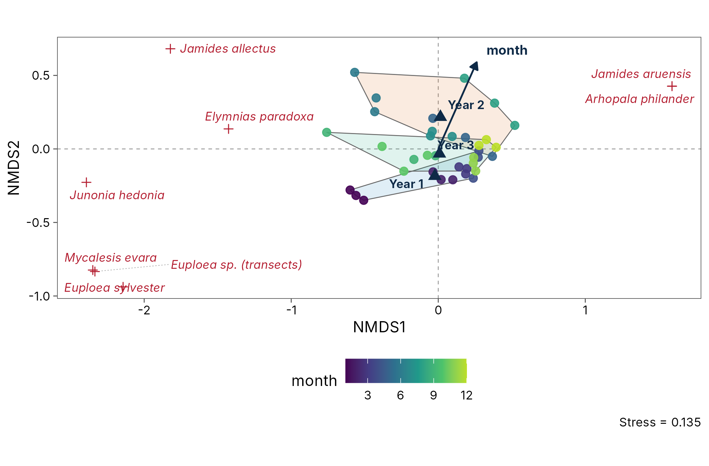
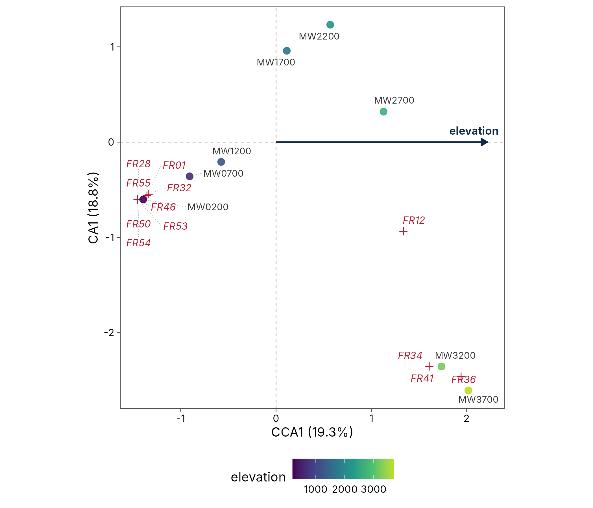
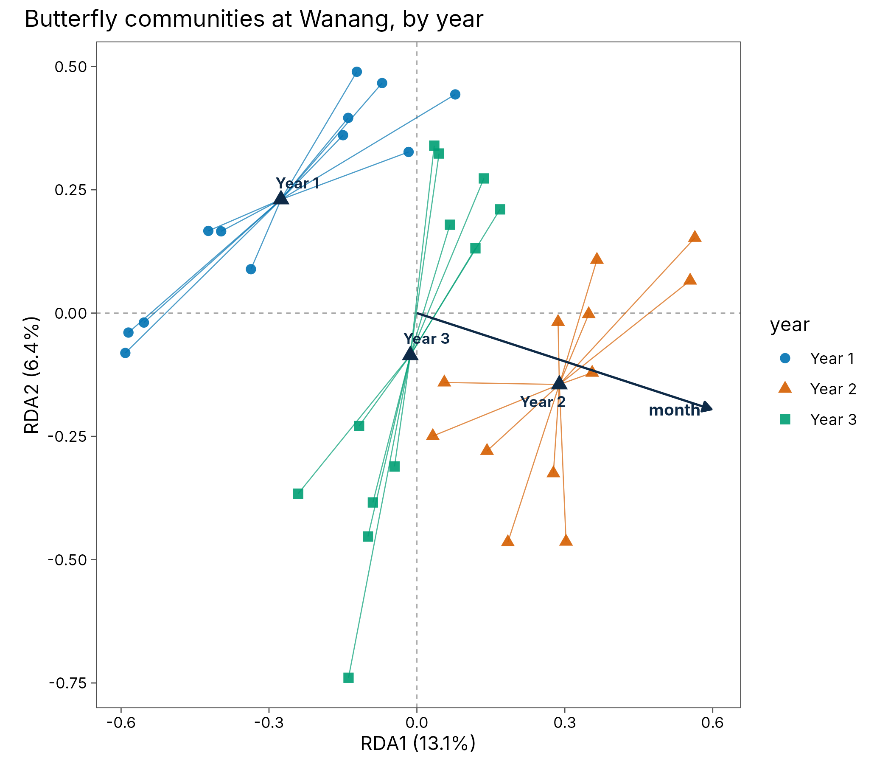

ord_fit() fits every common ordination to long community
data and returns tidy scores; autoplot() draws
publication-quality biplots and triplots in the style of CANOCO. The
ordinations are computed by the vegan package, so
the results are identical to vegan’s (this is checked in the test
suite).
Choosing a method
| Question | Method | method = |
|---|---|---|
| Main gradients in composition, short gradients | Principal components analysis | "pca" |
| Main gradients, long gradients (species turn over) | Correspondence analysis, detrended CA |
"ca", "dca"
|
| Main gradients from any dissimilarity | Principal coordinates analysis, NMDS |
"pcoa", "nmds"
|
| How much composition do my variables explain? | Redundancy analysis | "rda" |
| The same, for long gradients | Canonical correspondence analysis | "cca" |
| The same, for any dissimilarity | Distance-based RDA | "dbrda" |
A first DCA axis longer than about 4 standard deviation units
suggests long gradients, where the unimodal methods (CA, CCA) fit better
than the linear ones (PCA, RDA). PCA and RDA use the Hellinger
transformation by default (Legendre and Gallagher 2001); change it with
transform.
Reading the diagrams
| Element | Meaning |
|---|---|
| Points | Sites (coloured by a site variable) |
| Red arrows from the origin | Species, in linear methods (PCA, RDA, PCoA, db-RDA): the direction in which each species increases |
| Red crosses | Species optima, in unimodal methods (CA, CCA, DCA) and NMDS |
| Dark arrows from the origin | Quantitative environmental variables; in NMDS and PCA they are fitted afterwards (passive) |
| Dark triangles | Centroids of factor levels, such as years |
| Ellipses, hulls, spiders | Spread of each group of sites |
| Faint dotted grey lines | Label leaders only: they join a label that was moved to avoid overlap to its point |
Constrained ordination: butterflies at Wanang
wanang_butterflies holds butterfly counts on 36 days
over three years. Does the community differ between years and change
through the months? Site variables (here year and
month) are taken from the data automatically, because they
are constant within each day.
butterflies <- mutate(wanang_butterflies, year = factor(paste("Year", year)))
rda <- ord_fit(butterflies, method = "rda", formula = ~ year + month)
rda
#> RDA of 36 sites and 189 species
#> Transformation: hellinger
#> Variation explained: RDA1 13.1%, RDA2 6.4%, RDA3 4.1%
#> Constrained: 23.6% of the totalPermutation tests of the whole model and of each term:
ord_test(rda)
#> # A tibble: 2 × 5
#> term df variance statistic p.value
#> <chr> <dbl> <dbl> <dbl> <dbl>
#> 1 Model 3 0.0521 3.29 0.001
#> 2 Residual 32 0.169 NA NA
ord_test(rda, by = "terms")
#> # A tibble: 3 × 5
#> term df variance statistic p.value
#> <chr> <dbl> <dbl> <dbl> <dbl>
#> 1 year 2 0.0336 3.18 0.001
#> 2 month 1 0.0185 3.51 0.001
#> 3 Residual 32 0.169 NA NAA triplot shows the days (points), the species with the strongest responses (red arrows), the month gradient (blue arrow) and the year centroids (triangles). Ellipses cover one standard deviation of the days in each year.
autoplot(rda, colour = year, ellipse = "sd", species = 10)
Unconstrained ordination with passive variables
NMDS summarises composition without reference to the variables; adding a formula fits them passively afterwards ([vegan::envfit()]), as supplementary variables in CANOCO.
nmds <- ord_fit(butterflies, method = "nmds", formula = ~ month + year)
tidy(nmds, "envfit")
#> # A tibble: 2 × 4
#> term type r2 p.value
#> <chr> <chr> <dbl> <dbl>
#> 1 month vector 0.198 0.034
#> 2 year factor 0.185 0.01
autoplot(nmds, colour = month, group = year, hull = TRUE, species = 8)
Frogs along Mt Wilhelm
Frog communities turn over almost completely along the elevational gradient, so a unimodal method suits them. CCA constrained by elevation:
cca <- ord_fit(png_frogs, method = "cca", formula = ~elevation)
ord_test(cca)
#> # A tibble: 2 × 5
#> term df chi_square statistic p.value
#> <chr> <dbl> <dbl> <dbl> <dbl>
#> 1 Model 1 0.959 1.44 0.001
#> 2 Residual 6 4.00 NA NA
autoplot(cca, colour = elevation, site_labels = TRUE, species = 12)
Customising the plot
Every option is an argument, and the result is an ordinary ggplot:
-
axes = c(1, 3)plots other axes. -
speciessets how many species to show (the best represented);0hides them. -
ellipse = "sd","ci"(alevelregion for the points) or"se"(alevelconfidence region for the centroid);hull = TRUE;spider = TRUE. -
site_labels = TRUE,arrows = FALSE. -
colour,shapeandgrouptake site variables.
autoplot(rda, colour = year, shape = year, spider = TRUE, species = 0) +
labs(title = "Butterfly communities at Wanang, by year") +
theme(legend.position = "right")
Tidy scores for your own plots
tidy(rda, "sites")
#> # A tibble: 36 × 7
#> site axis1 axis2 axis3 day month year
#> <chr> <dbl> <dbl> <dbl> <int> <int> <fct>
#> 1 day01 -0.554 -0.0192 -0.548 1 1 Year 1
#> 2 day02 -0.585 -0.0395 -0.437 2 1 Year 1
#> 3 day03 -0.591 -0.0809 -0.531 3 1 Year 1
#> 4 day04 -0.423 0.167 -0.0389 4 2 Year 1
#> 5 day05 -0.337 0.0890 -0.00424 5 2 Year 1
#> 6 day06 -0.397 0.166 0.119 6 2 Year 1
#> 7 day07 -0.0705 0.466 -0.0135 7 3 Year 1
#> 8 day08 -0.139 0.396 -0.0547 8 3 Year 1
#> 9 day09 -0.150 0.361 -0.0338 9 3 Year 1
#> 10 day10 0.0778 0.443 -0.191 10 4 Year 1
#> # ℹ 26 more rows
tidy(rda, "axes")
#> # A tibble: 3 × 4
#> axis name eigenvalue explained
#> <chr> <chr> <dbl> <dbl>
#> 1 axis1 RDA1 0.0290 0.131
#> 2 axis2 RDA2 0.0141 0.0637
#> 3 axis3 RDA3 0.00903 0.0409
glance(rda)
#> # A tibble: 1 × 8
#> method n_sites n_species transform distance scaling stress constrained
#> <chr> <int> <int> <chr> <lgl> <chr> <dbl> <dbl>
#> 1 rda 36 189 hellinger NA species NA 0.236References
Legendre, P. and Gallagher, E. D. (2001). Ecologically meaningful transformations for ordination of species data. Oecologia, 129, 271-280. https://doi.org/10.1007/s004420100716
ter Braak, C. J. F. and Smilauer, P. (2012). Canoco reference manual and user’s guide: software for ordination (version 5.0). Microcomputer Power, Ithaca, USA.
Oksanen, J. et al. vegan: Community Ecology Package. https://CRAN.R-project.org/package=vegan